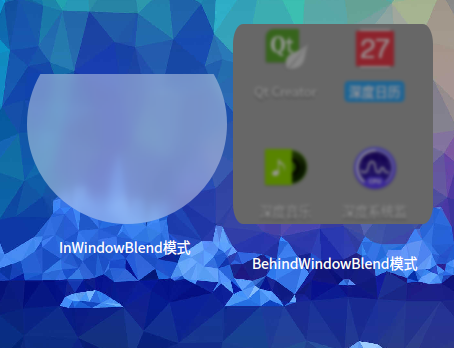

DBlurEffectWidget Class
class Dtk::Widget::DBlurEffectWidget用于实现主窗口或控件背景的实时模糊效果. More...
| Header: | #include <DBlurEffectWidget> |
Public Types
| enum | BlendMode { InWindowBlend, BehindWindowBlend, InWidgetBlend } |
| enum | BlurMode { GaussianBlur } |
| enum | MaskColorType { DarkColor, LightColor, AutoColor, CustomColor } |
Properties
|
Public Functions
| DBlurEffectWidget(QWidget *parent = 0) | |
| Dtk::Widget::DBlurEffectWidget::BlendMode | blendMode() const |
| bool | blurEnabled() const |
| int | blurRectXRadius() const |
| int | blurRectYRadius() const |
| bool | isFull() const |
| quint8 | maskAlpha() const |
| QColor | maskColor() const |
| Dtk::Widget::DBlurEffectWidget::BlurMode | mode() const |
| int | radius() const |
| void | setMaskPath(const int &path) |
| void | setSourceImage(const QImage &image, bool autoScale = true) |
Public Slots
| void | setBlendMode(Dtk::Widget::DBlurEffectWidget::BlendMode blendMode) |
| void | setBlurEnabled(bool blurEnabled) |
| void | setBlurRectXRadius(int blurRectXRadius) |
| void | setBlurRectYRadius(int blurRectYRadius) |
| void | setFull(bool full) |
| void | setMaskAlpha(quint8 alpha) |
| void | setMaskColor(Dtk::Widget::DBlurEffectWidget::MaskColorType type) |
| void | setMaskColor(QColor maskColor) |
| void | setMode(Dtk::Widget::DBlurEffectWidget::BlurMode mode) |
| void | setRadius(int radius) |
| void | updateBlurSourceImage(const QRegion &ren) |
Signals
| void | blendModeChanged(Dtk::Widget::DBlurEffectWidget::BlendMode blendMode) |
| void | blurEnabledChanged(bool blurEnabled) |
| void | blurRectXRadiusChanged(int blurRectXRadius) |
| void | blurRectYRadiusChanged(int blurRectYRadius) |
| void | fullChanged(bool full) |
| void | maskAlphaChanged(quint8 alpha) |
| void | maskColorChanged(QColor maskColor) |
| void | modeChanged(Dtk::Widget::DBlurEffectWidget::BlurMode mode) |
| void | radiusChanged(int radius) |
Detailed Description
分为主窗口模糊 DBlurEffectWidget::BehindWindowBlend 和控件模糊 DBlurEffectWidget::InWindowBlend DBlurEffectWidget::InWindowBlend 这两种不同的模式，主窗口模糊效果依赖于窗口管理器的实现，目前仅支持 deepin-wm 和 kwin， 可以使用DWindowManagerHelper::hasBlurWindow 判断当前运行环境中的窗口管理器是否支持 模糊特效，使用 DPlatformWindowHandle::setWindowBlurAreaByWM 设置主窗口背景的模糊 区域。如果在一个主窗口内同时使用了多个 DBlurEffectWidget 控件，则在更新主窗口模糊区域 时会自动将所有控件的区域合并到 QVector<WMBlurArea> 或者 QList<QPainterPath> （如果有任意一个控件设置了 DBlurEffectWidget::radius 属性）中统一设置。 控件模糊效果的原理和 DClipEffectWidget 类似，在控件绘制时先使用 QPlatformBackingStore::toImage() 获取主窗口上控件对应区域内已经绘制的内容，此时获取的内容为此控件下层控件所绘制的内容，将 获得的 QImage 对象使用软件算法进行模糊处理，然后再将模糊之后的图像绘制到控件上。由于实现 原理限制，不适用于主窗口为OpenGL绘制模式的窗口（如：QOpenGLWindow ），且控件下面使用 OpenGL绘制的内容也生成模糊的效果（如 QOpenGLWidget ）
DBlurEffectWidget is QWidget that has blurry background. With different blend mode set, DBlurEffectWidget can do in-window-blend, which means the the widget is blended with the widgets between the top level window and the widget itself, and behind-window-blend, which means the widget is blended with the scene behind the window (with the help of WM).
The effect has optional styles can choose from: DBlurEffectWidget::DarkColor, DBlurEffectWidget::LightColor, and DBlurEffectWidget::CustomColor. Usually the first two are sufficient, you can also choose CustomColor and set the color you want by setting DBlurEffectWidget::maskColor.
Note: DBlurEffectWidget with BehindWindowBlend mode will become opaque if WM supports no X11 composite protocol.
Member Type Documentation
enum DBlurEffectWidget::BlendMode
DBlurEffectWidget::BlendMode 模糊模式

| Constant | Value | Description |
|---|---|---|
Dtk::Widget::DBlurEffectWidget::InWindowBlend | 0 | 以窗口内部控件作为模糊背景 |
Dtk::Widget::DBlurEffectWidget::BehindWindowBlend | 1 | 以外部的其它窗口作为模糊背景 |
Dtk::Widget::DBlurEffectWidget::InWidgetBlend | 2 | 同 DBlurEffectWidget::InWindowBlend，区别是不会自动更新用于模糊的源图片 可手动调用 DBlurEffectWidget::updateBlurSourceImage 更新，以此来实现自行控制模糊 源图片的更新时机 |
enum DBlurEffectWidget::BlurMode
DBlurEffectWidget::BlurMode 模糊算法
| Constant | Value | Description |
|---|---|---|
Dtk::Widget::DBlurEffectWidget::GaussianBlur | 0 | 高斯模糊算法 |
enum DBlurEffectWidget::MaskColorType
DBlurEffectWidget::MaskColorType 内置的几种颜色模式。分为三种情况： A：模式为 DBlurEffectWidget::InWindowBlend 或当前窗口管理器支持混成且支持窗口背景模糊 B：模式为 DBlurEffectWidget::BehindWindowBlend 或 DBlurEffectWidget::InWindowBlend 窗口管理器不支持混成 C：模式为 DBlurEffectWidget::BehindWindowBlend 或 DBlurEffectWidget::InWindowBlend 窗口管理器不支持模糊
| Constant | Value | Description |
|---|---|---|
Dtk::Widget::DBlurEffectWidget::DarkColor | 0 | 深色，三种情况下的值分别为： |
A：color{black,#000000}（alpha通道值为非定值） B：color{#373F47,#373F47} C：color{rgba(0,0,0,0.8),#CC000000}
| Constant | Value | Description |
|---|---|---|
Dtk::Widget::DBlurEffectWidget::LightColor | 1 | 浅色，三种情况下的值分别为： A：color{#FFFFFF,#FFFFFF}（alpha通道值为非定值） B：color{#FCFCFC,#FCFCFC} C：color{rgba(255,255,255,0.8),#CCFFFFFF} |
Dtk::Widget::DBlurEffectWidget::AutoColor | 2 | 自动颜色，以当前应用的主题的背景色作为叠加色（alpha通道值为非定值） |
Dtk::Widget::DBlurEffectWidget::CustomColor | 3 | 自定义颜色，使用 DBlurEffectWidget::setMaskColor 设置的颜色 |
See also DBlurEffectWidget::maskAlpha.
Property Documentation
blendMode : BlendMode
模糊的应用场景，默认会根据有没有父控件自动判断使用哪种模式
Note: 可读可写
Note: 父对象为空时设置模式为 DBlurEffectWidget::InWindowBlend 没有意义
Access functions:
| Dtk::Widget::DBlurEffectWidget::BlendMode | blendMode() const |
| void | setBlendMode(Dtk::Widget::DBlurEffectWidget::BlendMode blendMode) |
Notifier signal:
| void | blendModeChanged(Dtk::Widget::DBlurEffectWidget::BlendMode blendMode) |
blurEnabled : bool
如果值为 true 则此控件的模糊设置生效，否则不生效
Note: 可读可写
Access functions:
| bool | blurEnabled() const |
| void | setBlurEnabled(bool blurEnabled) |
Notifier signal:
| void | blurEnabledChanged(bool blurEnabled) |
blurRectXRadius : int
模糊区域在x轴方向上的圆角半径，默认值为0
Note: 可读可写
Access functions:
| int | blurRectXRadius() const |
| void | setBlurRectXRadius(int blurRectXRadius) |
Notifier signal:
| void | blurRectXRadiusChanged(int blurRectXRadius) |
See also DBlurEffectWidget::blurRectYRadius, DBlurEffectWidget::setMaskPath, and QPainterPath::addRoundedRect.
blurRectYRadius : int
模糊区域在y轴方向上的圆角半径，默认值为0
Note: 可读可写
Access functions:
| int | blurRectYRadius() const |
| void | setBlurRectYRadius(int blurRectYRadius) |
Notifier signal:
| void | blurRectYRadiusChanged(int blurRectYRadius) |
See also DBlurEffectWidget::blurRectXRadius, DBlurEffectWidget::setMaskPath, and QPainterPath::addRoundedRect.
full : bool
如果值为true，将模糊此控件所在顶层窗口的整个背景，而无论控件的大小和位置，否则使用控件的位置和大小 设置顶层窗口的模糊区域。需要注意的时，当控件本身就是顶层窗口且未设置 blurRectXRadius 和 blurRectYRadius 属性的情况下，无论 full 属性的值为多少，都将和值为 true 时的行为保持一致。
Note: 可读可写
Note: 此属性不影响蒙版的绘制区域
Note: 只在模糊的混合模式为 BehindWindowBlend 或 DBlurEffectWidget::InWindowBlend 时生效
Access functions:
Notifier signal:
| void | fullChanged(bool full) |
See also DBlurEffectWidget::blurRectXRadius, DBlurEffectWidget::blurRectYRadius, DBlurEffectWidget::maskColor, and DBlurEffectWidget::blendMode.
maskAlpha : quint8
maskColor 的alpha通道值。当前窗口管理器支持混成（窗口背景透明）时默认值为102，否则为204
Note: 可读可写
Access functions:
| quint8 | maskAlpha() const |
| void | setMaskAlpha(quint8 alpha) |
Notifier signal:
| void | maskAlphaChanged(quint8 alpha) |
See also DBlurEffectWidget::maskColor.
maskColor : QColor
画在控件模糊背景之上的颜色，此颜色的alpha通道值会被 maskAlpha 属性影响 修改此属性会自动将颜色模式设置为 CustomColor，设置后将不能再自动根据窗口管理器是否 支持混成和模糊来自动使用最佳的颜色
Note: 可读可写
Access functions:
| QColor | maskColor() const |
| void | setMaskColor(QColor maskColor) |
| void | setMaskColor(Dtk::Widget::DBlurEffectWidget::MaskColorType type) |
Notifier signal:
| void | maskColorChanged(QColor maskColor) |
See also DBlurEffectWidget::blurRectXRadius and DBlurEffectWidget::setMaskColor().
mode : BlurMode
所采用的模糊算法，默认值为 GaussianBlur
Note: 可读可写
Note: 只在模式为 DBlurEffectWidget::InWindowBlend 时有效
Access functions:
| Dtk::Widget::DBlurEffectWidget::BlurMode | mode() const |
| void | setMode(Dtk::Widget::DBlurEffectWidget::BlurMode mode) |
Notifier signal:
| void | modeChanged(Dtk::Widget::DBlurEffectWidget::BlurMode mode) |
radius : int
模糊效果计算时的取样范围，模糊的原理为：将此像素点和周围像素点合成计算得到得到新的值， 此属性表示像素点周围 radius 距离的所有像素点参与计算
Note: 可读可写
Note: 只在模式为 DBlurEffectWidget::InWindowBlend 时有效
Access functions:
Notifier signal:
| void | radiusChanged(int radius) |
Member Function Documentation
DBlurEffectWidget::DBlurEffectWidget(QWidget *parent = 0)
DBlurEffectWidget::DBlurEffectWidget constructs an instance of DBlurEffectWidget.
和普通控件使用方式一样，可以作为任何控件的子控件。默认会开启 Qt::WA_TranslucentBackground， 必须设置控件为背景透明，否则控件所在区域的内容重绘时，在此控件下方的区域不会被下层控件重新绘制
parent is passed to QWidget constructor. parent 当父对象为空时，默认使用 DBlurEffectWidget::BehindWindowBlend 模式，否则使用 DBlurEffectWidget::InWindowBlend 模式
[signal] void DBlurEffectWidget::blendModeChanged(Dtk::Widget::DBlurEffectWidget::BlendMode blendMode)
信号会在 blendMode 属性的值改变时被发送
Note: Notifier signal for property blendMode.
[signal] void DBlurEffectWidget::blurRectXRadiusChanged(int blurRectXRadius)
信号会在 blurRectXRadius 属性的值改变时被发送
Note: Notifier signal for property blurRectXRadius.
[signal] void DBlurEffectWidget::blurRectYRadiusChanged(int blurRectYRadius)
信号会在 blurRectYRadius 属性的值改变时被发送
Note: Notifier signal for property blurRectYRadius.
[signal] void DBlurEffectWidget::maskAlphaChanged(quint8 alpha)
信号会在 alpha 属性的值改变时被发送
Note: Notifier signal for property maskAlpha.
See also DBlurEffectWidget::maskAlpha.
[signal] void DBlurEffectWidget::maskColorChanged(QColor maskColor)
信号会在 maskColor 属性的值改变时被发送
Note: Notifier signal for property maskColor.
[signal] void DBlurEffectWidget::modeChanged(Dtk::Widget::DBlurEffectWidget::BlurMode mode)
信号会在 mode 属性的值改变时被发送.
Note: Notifier signal for property mode.
[signal] void DBlurEffectWidget::radiusChanged(int radius)
信号会在 radius 属性的值改变时被发送
Note: Notifier signal for property radius.
[slot] void DBlurEffectWidget::setBlendMode(Dtk::Widget::DBlurEffectWidget::BlendMode blendMode)
DBlurEffectWidget::setBlendMode blendMode 窗口混合模式，模式设定变化发送blendModeChanged信号
Note: Setter function for property blendMode.
See also blendMode().
[slot] void DBlurEffectWidget::setBlurEnabled(bool blurEnabled)
DBlurEffectWidget::setBlurEnabled blurEnabled 设定模糊区域是否可以伸缩
Note: Setter function for property blurEnabled.
See also blurEnabled().
[slot] void DBlurEffectWidget::setBlurRectXRadius(int blurRectXRadius)
DBlurEffectWidget::setBlurRectXRadius blurRectXRadius 模糊区域矩形的X圆角大小
Note: Setter function for property blurRectXRadius.
See also blurRectXRadius().
[slot] void DBlurEffectWidget::setBlurRectYRadius(int blurRectYRadius)
DBlurEffectWidget::setBlurRectYRadius blurRectYRadius 模糊区域矩形的Y圆角大小
Note: Setter function for property blurRectYRadius.
See also blurRectYRadius().
[slot] void DBlurEffectWidget::setFull(bool full)
DBlurEffectWidget::setFull full 设置时候模糊区域占满整个窗口大小
Note: Setter function for property full.
See also isFull().
[slot] void DBlurEffectWidget::setMaskAlpha(quint8 alpha)
DBlurEffectWidget::setMaskAlpha alpha 设置Alpha通道,值变化发送maskAlphaChanged信号
Note: Setter function for property maskAlpha.
See also maskAlpha().
[slot] void DBlurEffectWidget::setMaskColor(Dtk::Widget::DBlurEffectWidget::MaskColorType type)
设置控件的颜色模式，默认值为 MaskColorType::CustomColor type
Note: Setter function for property maskColor.
[slot] void DBlurEffectWidget::setMaskColor(QColor maskColor)
DBlurEffectWidget::setMaskColor maskColor 设定mask的颜色
Note: Setter function for property maskColor.
See also maskColor().
[slot] void DBlurEffectWidget::setMode(Dtk::Widget::DBlurEffectWidget::BlurMode mode)
DBlurEffectWidget::setMode mode 设定模糊算法,默认为高斯模糊算法GaussianBlur
Note: Setter function for property mode.
See also mode().
[slot] void DBlurEffectWidget::setRadius(int radius)
DBlurEffectWidget::setRadius radius 模糊区域的圆角大小 如果设定值和原值不一致会发送信号radiusChanged
Note: Setter function for property radius.
See also radius().
[slot] void DBlurEffectWidget::updateBlurSourceImage(const QRegion &ren)
DBlurEffectWidget::updateBlurSourceImage ren 设定模糊区域的背景图片
Dtk::Widget::DBlurEffectWidget::BlendMode DBlurEffectWidget::blendMode() const
This property holds which mode is used to blend the widget and its background scene.
Note: Getter function for property blendMode.
See also setBlendMode().
bool DBlurEffectWidget::blurEnabled() const
DBlurEffectWidget::blurEnabled Returns true 模糊区域可伸缩调整
Note: Getter function for property blurEnabled.
See also setBlurEnabled().
int DBlurEffectWidget::blurRectXRadius() const
This property holds the xRadius of the effective background.
The xRadius and yRadius specify the radius of the ellipses defining the corners of the effective background.
Note: Getter function for property blurRectXRadius.
See also setBlurRectXRadius() and DBlurEffectWidget::blurRectYRadius.
int DBlurEffectWidget::blurRectYRadius() const
This property holds the yRadius of the effective background.
The xRadius and yRadius specify the radius of the ellipses defining the corners of the effective background.
Note: Getter function for property blurRectYRadius.
See also setBlurRectYRadius() and DBlurEffectWidget::blurRectXRadius.
bool DBlurEffectWidget::isFull() const
DBlurEffectWidget::isFull Returns true 窗口占据了整个模糊区域,反之为false
Note: Getter function for property full.
QColor DBlurEffectWidget::maskColor() const
This property holds the background color of this widget.
It returns predefined colors if the DBlurEffectWidget::maskColorType is set to DBlurEffectWidget::DarkColor or BlurEffectWidget::LightColor, returns the color set by DBlurEffectWidget::setMaskColor if DBlurEffectWidget::maskColorType is set to BlurEffectWidget::CustomColor.
Note: Getter function for property maskColor.
See also setMaskColor().
Dtk::Widget::DBlurEffectWidget::BlurMode DBlurEffectWidget::mode() const
This property holds which blur algorithm to be used.
Currently it only supports DBlurEffectWidget::GaussianBlur.
Note: Getter function for property mode.
See also setMode().
int DBlurEffectWidget::radius() const
This property holds the radius of the blur effect.
Note: This property has no effect with the DBlurEffectWidget::blendMode set to DBlurEffectWidget::BehindWindowBlend.
Note: Getter function for property radius.
See also setRadius().
void DBlurEffectWidget::setMaskPath(const int &path)
DBlurEffectWidget::setMaskPath set custom area as the effective background.
设置模糊区域的路径，当未调用过此接口时，模糊区域为整个控件所占据的空间，此路径坐标原点为控件左上角
path a QPainterPath to be used as the effectvie background.
Warning: 设置自定义路径之后，控件大小改变时不会再自动调整模糊区域大小
See also DBlurEffectWidget::blurRectXRadius and DBlurEffectWidget::blurRectYRadius.
void DBlurEffectWidget::setSourceImage(const QImage &image, bool autoScale = true)
DBlurEffectWidget::setSourceImage image autoScale
Warning: